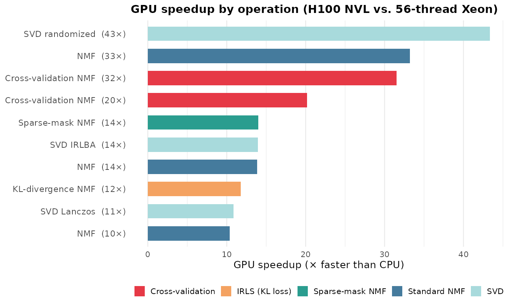

Motivation
At scale, dimensionality reduction is bottlenecked by dense linear algebra. Each NMF iteration computes Gram matrices (, ) and right-hand-side products (, ) — operations that map directly onto GPU hardware where thousands of cores execute matrix multiplies in parallel. RcppML’s GPU backend uses NVIDIA CUDA with cuBLAS and cuSPARSE to accelerate these operations, achieving 10–40× speedups on real single-cell datasets even against a fully-utilized 56-thread CPU.
The GPU advantage is not uniform across operations. Standard NMF already benefits significantly, but cross-validation and SVD randomized show the largest gains because these modes perform dense BLAS work (Gram matrix corrections, block matrix multiplies) that maps directly onto GPU hardware. The GPU is optional — all code falls back to CPU transparently when CUDA is unavailable.
Quick Start
library(RcppML)
# Check GPU availability
gpu_available()
#> [1] TRUE
gpu_info()
#> device name total_mb free_mb
#> 1 0 NVIDIA H100 NVL 95830 93500
# NMF with GPU — same API, add resource = "gpu"
model <- nmf(A, k = 20, resource = "gpu", seed = 42)The resource parameter accepts "gpu",
"cpu", or "auto" (default). With
"auto", RcppML uses GPU when available and falls back to
CPU otherwise.
Benchmarks on Real Data
How much faster is GPU in practice? We benchmarked 10 operations spanning standard NMF, cross-validation, IRLS (KL divergence), sparse-mask NMF, and SVD on two real single-cell RNA-seq datasets.
Data Preparation
library(RcppML)
library(Matrix)
library(SeuratData)
library(Seurat)
# ── hcabm40k: 40,000 bone marrow cells ──
data("hcabm40k")
hca <- UpdateSeuratObject(hcabm40k)
counts <- hca[["RNA"]]$counts # 17,369 genes × 40,000 cells
# Select top 5,000 variable genes, log-normalize
gene_vars <- Matrix::rowMeans(counts^2) - Matrix::rowMeans(counts)^2
top5k <- head(order(gene_vars, decreasing = TRUE), 5000)
hca_5k <- counts[top5k, ]
lib_sizes <- Matrix::colSums(hca_5k)
hca_norm <- log1p(hca_5k %*% Diagonal(x = 1e4 / lib_sizes))
hca_norm <- as(hca_norm, "dgCMatrix")
# 5,000 × 40,000, nnz ≈ 33M, density ≈ 16.5%
# 10K-cell subset for expensive k = 64 operations
set.seed(42)
hca_10k <- hca_norm[, sample(ncol(hca_norm), 10000)]
# 5,000 × 10,000, nnz ≈ 8.3M
# ── pbmc3k: 500 PBMCs (bundled with RcppML) ──
data(pbmc3k, package = "RcppML")
tmp <- tempfile(fileext = ".spz")
writeBin(pbmc3k, tmp)
pbmc <- st_read(tmp)
pbmc_norm <- log1p(pbmc %*% Diagonal(x = 1e4 / Matrix::colSums(pbmc)))
pbmc_norm <- as(pbmc_norm, "dgCMatrix")
# 8,000 × 500, nnz ≈ 412KResults
All benchmarks ran on an NVIDIA H100 NVL (96 GB
HBM3) against a 56-thread Intel Xeon Gold 6238R (2 × 28
cores, all threads active). NMF iterations were forced with
tol = 0 and maxit = 20.
| Operation | CPU (s) | GPU (s) | Speedup |
|---|---|---|---|
| SVD randomized (k=10, 40K cells) | 17.8 | 0.41 | 43× |
| NMF (k=64, 10K cells) | 29.2 | 0.88 | 33× |
| Cross-validation NMF (k=64, 10K cells) | 75.3 | 2.39 | 32× |
| Cross-validation NMF (k=16, pbmc3k) | 4.0 | 0.20 | 20× |
| Sparse-mask NMF (k=20, 10K cells) | 10.5 | 0.75 | 14× |
| SVD IRLBA (k=10, 40K cells) | 5.3 | 0.38 | 14× |
| NMF (k=20, 40K cells) | 38.5 | 2.78 | 14× |
| KL-divergence NMF (k=16, pbmc3k) | 23.4 | 1.98 | 12× |
| SVD Lanczos (k=10, 40K cells) | 4.8 | 0.44 | 11× |
| NMF (k=20, pbmc3k) | 2.2 | 0.21 | 10× |

Key Observations
Three patterns stand out:
SVD randomized shows the largest speedup (43×). Randomized SVD performs full matrix–dense block multiplies (, ) that translate into a handful of cuSPARSE/cuBLAS calls on GPU. Cross-validation NMF at high rank is close behind (32×) because CV corrects the Gram matrix for every held-out entry each iteration — a update per test-set column that batches naturally on GPU.
All operations achieve ≥ 10× speedup, even against a fully-utilized 56-thread Xeon. NMF at high rank (, 33×), IRLS KL-divergence (12×), and sparse-mask NMF (14×) all benefit from GPU BLAS acceleration.
Speedups scale with problem size and rank. The 40K-cell NMF at (14×) benefits less than on 10K cells (33×) because higher rank increases the Gram matrix and NNLS work that the GPU absorbs efficiently. With fewer CPU threads (e.g., 8), speedups increase proportionally.
Why GPU Gains Are Larger for CV and IRLS
Standard NMF spends most of each iteration on two operations:
Cross-validation adds a correction step: for each held-out column in the test set, the Gram matrix is adjusted by subtracting the contribution of the missing entries:
On CPU, this per-column correction loop is sequential. On GPU, the corrections for all test columns are batched into a single sparse outer-product kernel. The result: CV overhead that dominates CPU time becomes negligible on GPU, pushing CV speedups well above standard NMF speedups.
IRLS losses (KL divergence, Gamma–Poisson, etc.) similarly increase per-iteration work by solving weighted NNLS subproblems that require additional Gram matrix updates with observation-specific weights — again, heavy BLAS work that the GPU absorbs with minimal overhead.
API Reference
Resource Override Priority
The compute backend is determined by (highest priority first):
-
resourceparameter innmf()orsvd() -
RCPPML_RESOURCEenvironment variable options(RcppML.gpu = TRUE/FALSE)- Auto-detection (GPU if available, else CPU)
# Force CPU even when GPU is available
model <- nmf(A, k = 20, resource = "cpu", seed = 42)
# Session-wide override via environment variable
Sys.setenv(RCPPML_RESOURCE = "cpu")
# Or via R option
options(RcppML.gpu = FALSE)GPU-Supported Features
| Feature | GPU Support |
|---|---|
| Sparse NMF | Yes |
| Dense NMF | Yes |
| Cross-validation NMF | Yes |
| MSE loss | Yes |
MAE / Huber (via robust) |
Yes |
| KL / distribution losses | Yes |
| L1, L2 regularization | Yes |
| L21, angular regularization | Yes |
| Graph regularization | CPU only |
| Upper bound constraints | Yes |
| Bipartition / dclust | Yes |
| StreamPress streaming NMF | Yes (CPU decompression → GPU compute) |
When a GPU-unsupported feature is requested, RcppML falls back to CPU automatically with no error.
GPU-Direct StreamPress Reading
For very large datasets stored as .spz files,
st_read_gpu() transfers the matrix directly into GPU
memory, avoiding a full CPU-side dgCMatrix copy:
gpu_handle <- st_read_gpu("large_dataset.spz")
model <- nmf(gpu_handle, k = 30, seed = 42)
st_free_gpu(gpu_handle) # optional — GC handles cleanupSee the StreamPress vignette for
.spz format details.
Building the GPU Library
The GPU shared library is built separately from the R package using
nvcc.
Requirements
- NVIDIA GPU with compute capability 7.0 (Volta or newer)
- CUDA Toolkit 12.x (cuBLAS and cuSPARSE included)
Build Steps
# 1. Load CUDA on your system
module load cuda/12.8.1 # HPC example
# 2. Build the GPU shared library (use the project Makefile)
cd RcppML/src/
make -f Makefile.gpu install
# Or manually:
nvcc -O3 \
-gencode arch=compute_80,code=sm_80 \
-gencode arch=compute_90,code=sm_90 \
-std=c++17 -Xcompiler -fPIC --shared \
-I../inst/include \
-o ../inst/lib/RcppML_gpu.so \
gpu_bridge_nmf.cu gpu_bridge_svd.cu gpu_bridge_cluster.cu \
gpu_bridge_utils.cu sp_gpu_bridge.cu \
-lcublas -lcusparse -lcuda
# 3. Verify
Rscript -e 'library(RcppML); cat("GPU:", gpu_available(), "\n")'
#> GPU: TRUEAdapt the -gencode flags to your GPU architecture:
| GPU Family | Compute Capability | Flag |
|---|---|---|
| V100 | 7.0 | arch=compute_70,code=sm_70 |
| A100 | 8.0 | arch=compute_80,code=sm_80 |
| H100 | 9.0 | arch=compute_90,code=sm_90 |
| RTX 3090 | 8.6 | arch=compute_86,code=sm_86 |
| RTX 4090 | 8.9 | arch=compute_89,code=sm_89 |
Library Search Path
RcppML searches for RcppML_gpu.so in order:
inst/lib/ → src/ → package lib/ →
working directory root.
Troubleshooting
GPU not detected?
gpu_available(force_recheck = TRUE)
#> [1] FALSECommon causes: CUDA drivers missing or outdated
(nvidia-smi to check), GPU compute capability < 7.0,
RcppML_gpu.so not on the search path, or architecture
mismatch (library compiled for sm_90 won’t load on a
V100).
Precision: GPU uses FP32 for core operations and FP64 selectively for numerically sensitive accumulations. Results are equivalent to CPU (FP64) within floating-point tolerance.
Key Takeaways
-
Same API, different backend:
resource = "gpu"is the only change needed. - 10–40× speedups on real single-cell data against a fully-utilized 56-thread CPU, with SVD randomized and cross-validation showing the largest gains. With fewer CPU threads, speedups scale proportionally.
- Automatic fallback: If GPU is unavailable or a feature is CPU-only, RcppML falls back silently.
-
Direct disk-to-GPU via
st_read_gpu()for very large.spzdatasets.
See the NMF Fundamentals
vignette for comprehensive parameter documentation and the StreamPress vignette for .spz
file format details.